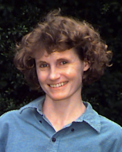

Please note: the AAS Obituaries are temporarily being hosted on this website while their full content is being ingested into the PubPub publishing platform newly adopted by the Bulletin of the American Astronomical Society. When the migration is complete, your existing links will take you to the final, migrated content. Contact peter.williams@aas.org with any questions.
Rebecca Anne Elson (1960-1999)
Rebecca A. W. Elson, an astronomer whose work on dense star clusters significantly advanced our understanding of cluster dynamics and stellar evolution, died on May 19, 1999, from non-Hodgkins lymphoma at the age of 39. She was a published poet, a creative researcher, and a colleague of extraordinary insight and warmth. Her contributions to our field, and to those who work in it, will be sorely missed.
Born on January 2, 1960, Becky was educated in the schools of Montreal, as well as on long summer field trips across Canada with her father, the geologist Prof. John Elson. She arrived at Smith College in Massachusetts at the age of 16 and, after a genuinely liberal education, part of it spent at St Andrews in Scotland, she graduated in 1980. She went on to earn a Masters Degree in Physics from the University of British Columbia and the PhD in Astronomy from the University of Cambridge in 1986 for a dissertation on globular clusters which became the focus of her life's work.
Becky then received a postdoctoral fellowship at the Institute of Advanced Study, Princeton, expecting to work on the first data from the Hubble Space Telescope which was due for launch that year. The Challenger explosion deferred those plans, although she continued to pursue her cluster research by obtaining extensive observations of the globular cluster system in the Large Magellanic Cloud using telescopes in Australia. During her first year at the Institute, at age 26, she co-authored a definitive article on star clusters for the Annual Reviews in Astronomy and Astrophysics. In 1989, she was the youngest astronomer to serve on a committee of the US National Academy of Sciences decennial review of the field. That same year, she became a Fellow of the Bunting Institute of Radcliffe College, Harvard University, an interdisciplinary center for women scholars. She returned to Cambridge in 1991 as a member of the research staff of the Institute of Astronomy.
Becky's work ranged from a search for stars in the halo of our own galaxy to regions of rapid star formation halfway across the Universe. She set strong limits on the contribution normal stars could make to the Milky Way's dark matter halo, using counts from the Hubble Deep Field to rule out a significant stellar component. The article describing this work was published on the first page of the first volume of the journal, New Astronomy. The same paper showed that some of the faintest star-like objects in the HDF image were most likely regions of intense star formation a few kiloparsecs across, lying at distances up to 6 billion light years from Earth. She was also a key participant in the Hubble Medium Deep Survey, a program to collect hundreds of images from the Hubble telescope in order to explore the changes in galaxy shapes over cosmic time.
Her principal work, however, focused on globular clusters, the benchmark systems against which all theories of star formation and stellar evolution are measured. The very broad age spread of the Magellanic clusters (ranging from a few million to nearly ten billion years), provides a series of snapshots of stellar evolution in progress. Teasing information on the dynamic processes of stellar birth, life, and death from this static series of pictures was Becky's craft. She made the first measurement of structural parameters for globular clusters outside the Local Group of galaxies, and produced a study of the most distant globular cluster system ever observed around an elliptical galaxy in the Hubble Deep Field. Her determination of the Magellanic cluster ages remains a milestone in the field. By mapping the distribution of cluster binaries, studying stellar mass segregation, and obtaining the distribution of stellar luminosities to very faint magnitudes, she established fundamental connections between the evolution of individual stars and the dynamics of the clusters as a whole. In the last round of Hubble time allocations, her team at Cambridge was awarded one of the largest programs scheduled for an intensive study of the Magellanic clusters — 95 orbits with WFPC, NICMOS, and STIS for four pairs of clusters with ages of 10, 100, 1000, and 10,000 million years. At the time of her death, she was finishing the first paper describing this work.
Becky's talents extended far beyond astrophysics, from soccer to poetry. She was a keen observer of herself and those around her, with an ability to share her observations with humor and gentle irony. While struggling to extract useful data on a globular cluster from the first round of (aberrated) HST data in which the extended wings of the point spread function scattered light all over the image, a frustrated colleague at the adjoining workstation threw up his hands and declared, “It's hopeless — it's all wings.” For Becky, this remark was inspiration for a poem:
Aberration1
The way they tell it
All the stars have wings
The sky so full of wings
There is no sky
And just for a moment
You forget
The error and the crimped
Paths of light
And you see it
The immense migration
And you hear the rush
The beating
In another poem written for her father, recalling the summer field trips they spent together in her childhood, she thanked him for “honoring all my questions with questions of your own.” Becky learned that lesson well. She honored colleagues, family, friends and strangers alike with questions of her own, with music and food and poetry and devotion, all uniquely her own. In “We Astronomers”2 she wrote, “We astronomers are nomads, Merchants, circus people, All the earth our tent.” We continue our wandering and our selling, and the circus goes on, but the tent is a little emptier now, and the sky no longer quite so full of wings.
1 Copyright Rebecca A. W. Elson 1992.
2 Copyright Rebecca A. W. Elson 1997.
Obituary written by: David J. Helfand (Institute of Astronomy, Cambridge, UK and Columbia University, New York, NY)
BAAS Citation: BAAS, 1999, 31, 1597
SAO/NASA ADS Bibcode: 1999BAAS...31.1597H